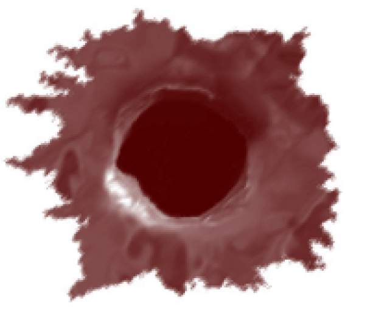
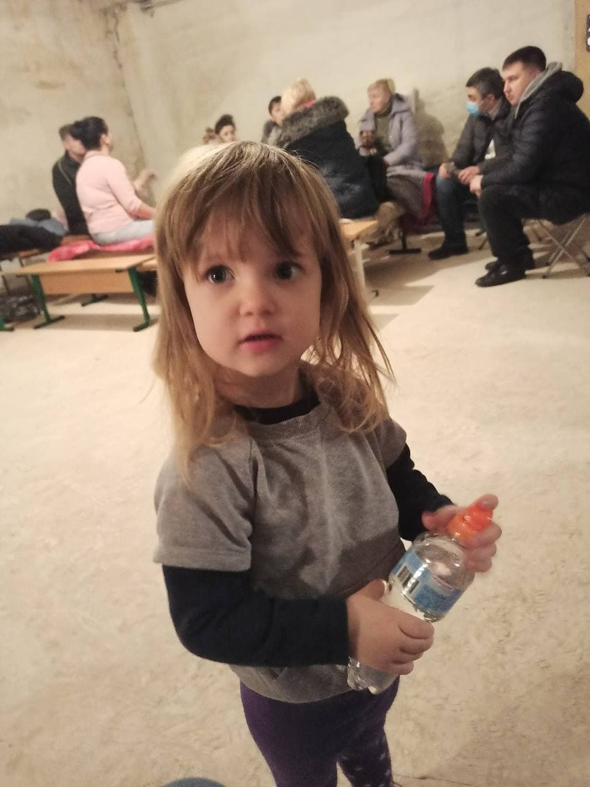
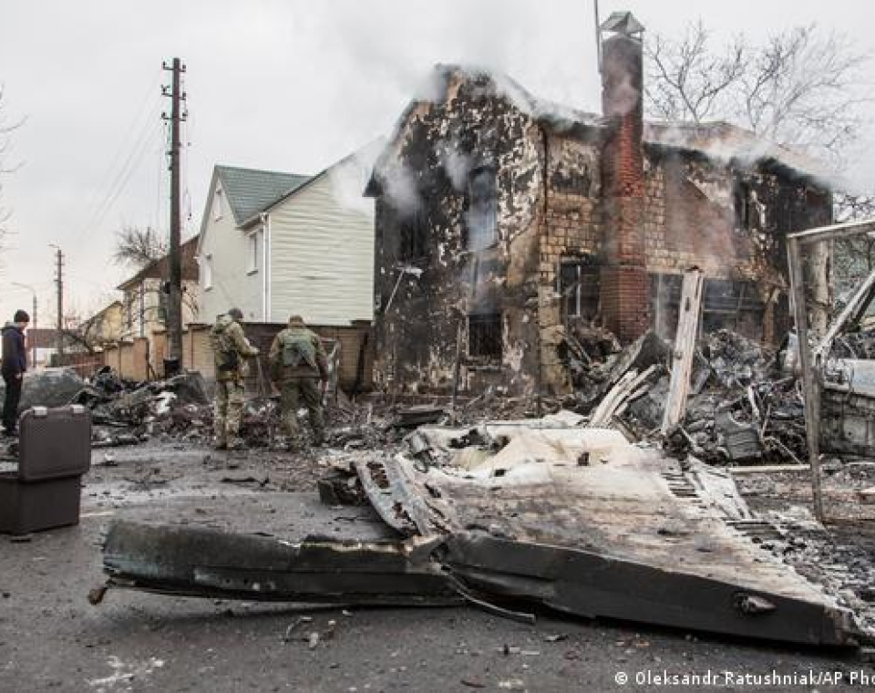
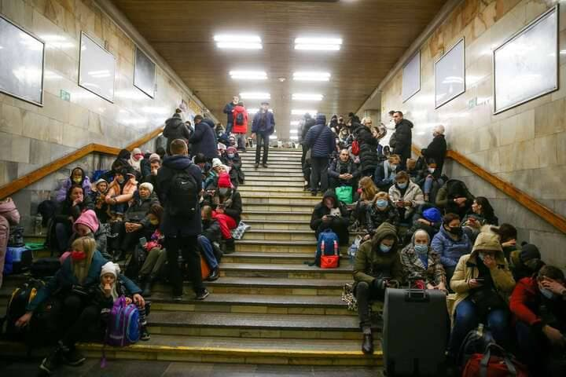
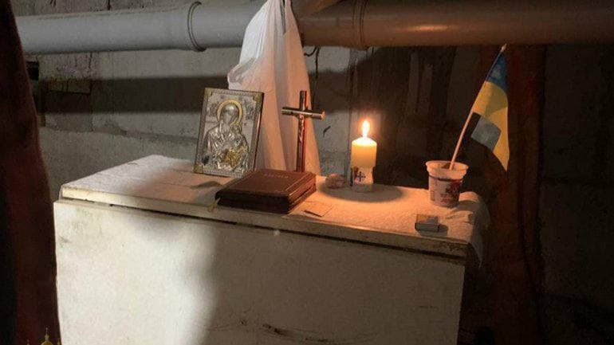
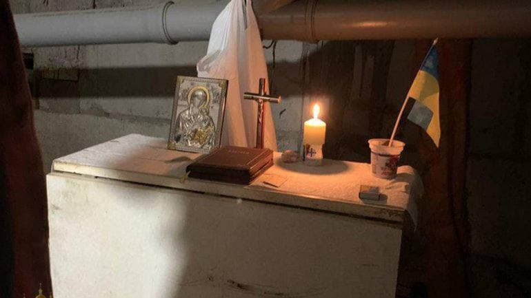
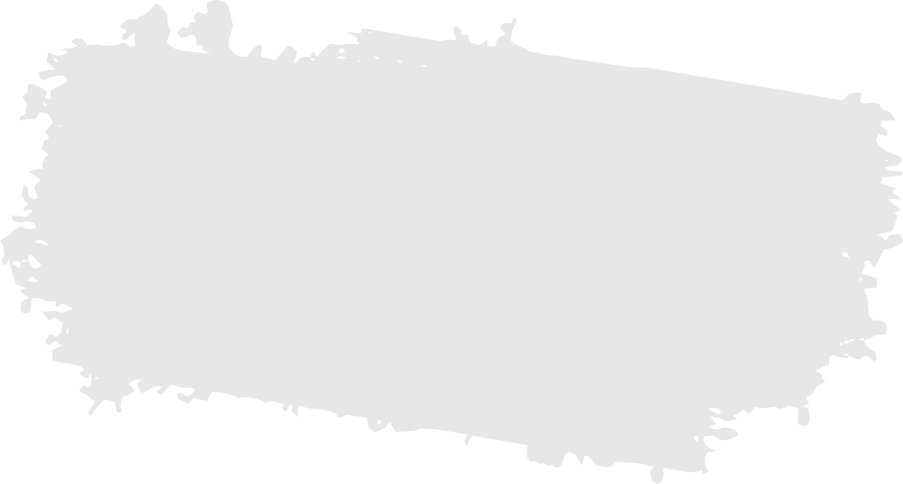

On February 24 at 4 AM, Russia treacherously invaded Ukraine.

Russian forces are shelling not only strategic targets but also kindergartens, ambulances, hospitals, and residential areas, killing civilians on the streets.
Russian saboteurs, dressed as civilians, are planting bombs and setting up mines which are disguised as toys and chess boards.
The whole civilized world must condemn their actions as war crimes and terrorist acts.
The Ukrainian army bravely defends its country and protects Europe: in three days
Russian forces have lost more people than in 8 years in Syria. This is a full-scale war and a devious act of abuse of international law.

The only way to stop Russia is to isolate its economy and prevent the country from leading a normal life.


 


How can you help Ukraine? Demand these actions!
Sport
Science
Culture
IT
Transport
Fashion
Financial support
For those who want to support Ukraine financially, the National Bank of Ukraine has opened a multi-currency account.
All money will be donated to the Armed Forces of Ukraine.
This account accepts donations in US, Canadian and Australian dollars, euros, British pounds, Swiss francs, yuan and yen.
The number of the special account:
UA843000010000000047330992708
To find out more information about your country's currency, visit NBU's site.
All money will be donated to the Armed Forces of Ukraine.
This account accepts donations in US, Canadian and Australian dollars, euros, British pounds, Swiss francs, yuan and yen.
The number of the special account:
UA843000010000000047330992708
To find out more information about your country's currency, visit NBU's site.
Go to NBU’s site
https://bank.gov.ua/